1.의뢰서 등록
이 화면은 보철물 의뢰를 등록하는 화면으로 모든 필수 항목(*)을 입력해야 등록이 완료됩니다.
[필수 입력 항목]
파트너, 의뢰 요청일, 완료 요청일, 환자명, 의뢰 유형, 의뢰 보철물
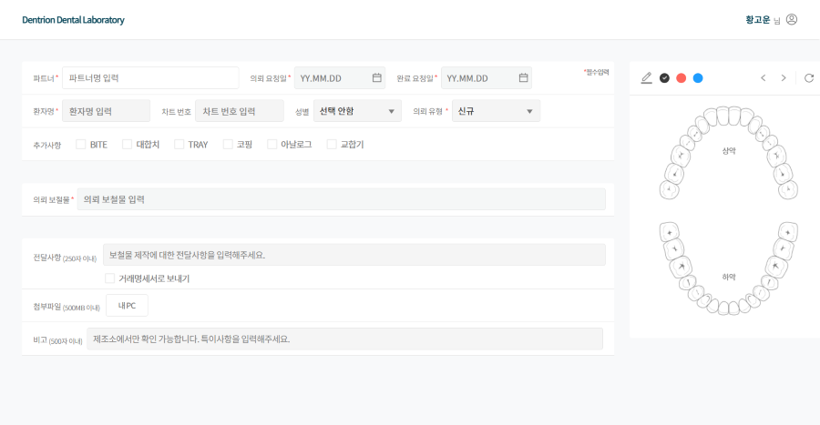
1-1. 입력 항목
1-1-1.파트너(필수입력항목)
파트너를 선택하면 다른 항목 입력이 활성화 됩니다.
검색란 클릭 시 제조소와 연결된 파트너 목록이 나타납니다.
검색 시 단축어와 파트너명 두 가지 모두 검색이 가능합니다.
미리 보기 예시
새로운 팝업창으로 이미지를 확인할 수 있습니다.
1-1-2.의뢰 요청일(필수입력항목)
의뢰 요청일은 보철물 제작을 의뢰하는 날짜입니다.
"접속일"(오늘날짜) 이후의 날짜는 선택할 수 없습니다.
날짜는 6자리 형식(YY.MM.DD)으로 직접 입력하거나, 달력 버튼을 통해 선택할 수 있습니다.
달력 클릭 시
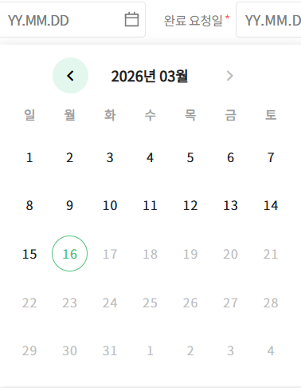
1-1-3.완료 요청일(필수입력항목)
완료 요청일은 제작된 보철물을 수령할 날짜입니다.
의뢰 요청일의 이후 날짜만 선택할 수 있습니다.
날짜는 6자리 형식(YY.MM.DD)으로 직접 입력하거나, 달력 버튼을 통해 선택할 수 있습니다.
달력 클릭 시
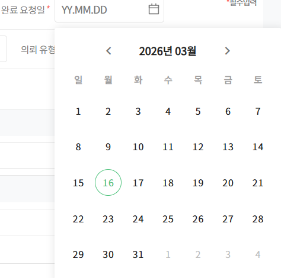
1-1-4.환자명(필수입력항목)
보철물 제작을 의뢰할 환자의 이름을 입력합니다.
한글,영문,숫자 입력 가능하며 공백 포함 최대 20글자까지 입력할 수 있습니다.
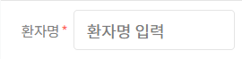
1-1-5.의뢰유형(필수입력항목)
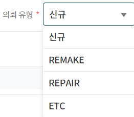
1.[신규]
새로운 보철물 제작을 의뢰할 때 선택합니다.
기본값으로 자동 설정 되어 있으며 변경 가능합니다.
2.[REMAKE]
출고된 보철물에 대해 파손, 변형, 분실 등의 사유로 재제작이 필요한 경우 선택합니다.
3.[REPAIR]
출고된 보철물에 대해 간단한 수정이나 보완이 필요한 경우 선택합니다.
4.[ETC]
REMAKE 또는 REPAIR 항목에 해당하지 않는 기타 사유로 보철물을 요청할 경우 선택합니다.
1-1-6.의뢰 보철물(필수입력항목)
입력란 클릭 시 의뢰 가능한 보철물 목록이 나타납니다.
검색하거나 스크롤 이동으로 의뢰할 보철물을 선택할 수 있습니다.
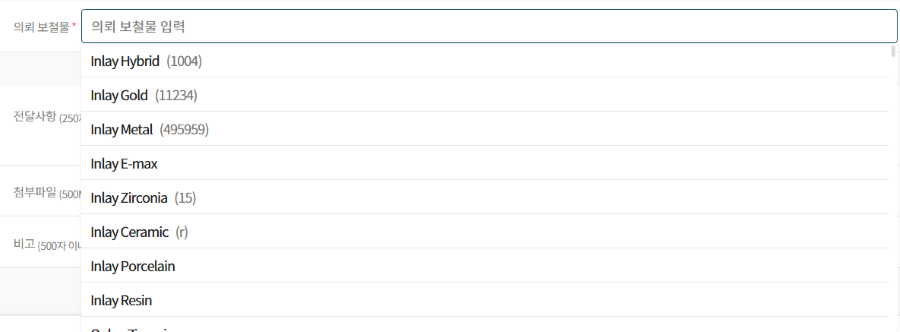
※한 환자에 대해 같은 의뢰 유형의 여러 보철물을 한 번에 등록할 수 있습니다.※
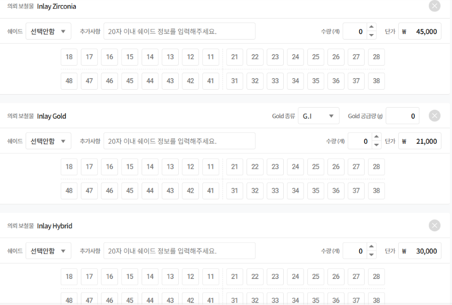
1-1-7.보철물별 치식 선택(필수입력항목)
각 의뢰 보철물마다 최소 하나 이상의 치식을 선택해야 등록이 완료됩니다.
선택한 의뢰 보철물의 치식을 선택할 수 있습니다.
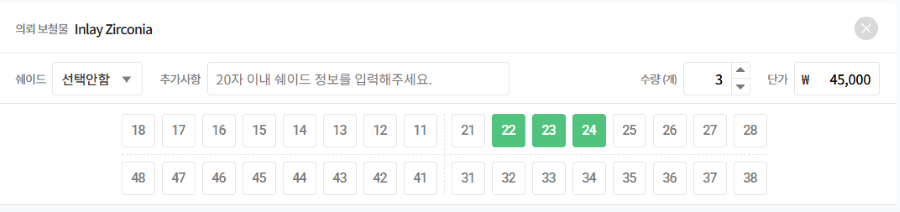
· (Implant) Crown & Bridge
Single 또는 Bridge 중 치식 선택 유형을 선택할 수 있습니다.
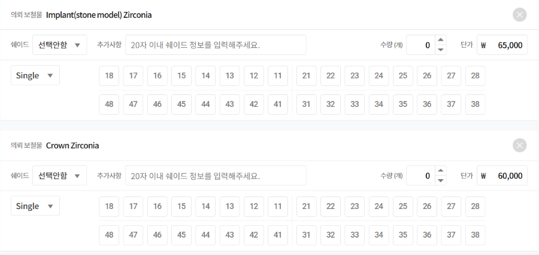
1. [Single] : 기본값으로 선택되어 있으며 지대치만 선택할 수 있습니다.
2. [Bridge] : 지대치와 Pontic을 각각 구분하여 선택할 수 있습니다.
· Denture & Partial
Arch와 Tooth 중 치식 선택 유형을 선택할 수 있습니다.
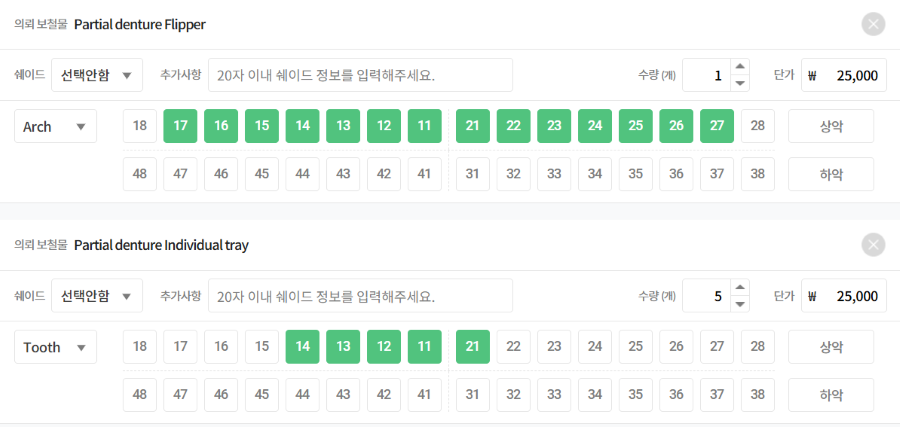
1. [Arch] : 상악 또는 하악 단위로 기공료를 청구할 경우 선택합니다.
2. [Tooth] : 치아 단위로 기공료를 청구하는 보철물의 경우 선택합니다.
· Gold
Gold 종류를 선택합니다.
보철물 의뢰와 함께 공급할 Gold가 있는 경우 Gold 공급량을 입력합니다.
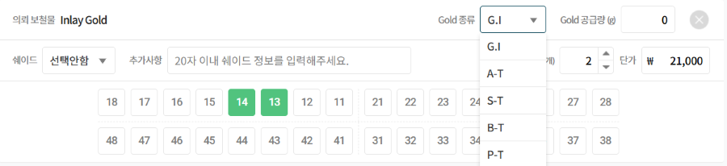
· Sugical guide
Arch와 Tooth 중 치식 선택 유형을 선택할 수 있습니다.
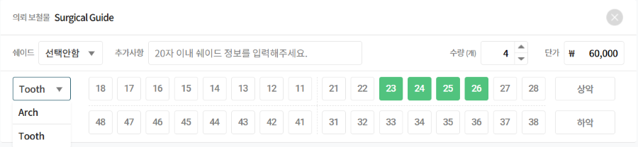
· Sugical guide additional hole
홀 추가 시 선택 가능합니다.
Arch 또는 Tooth 중 치식 선택 유형을 선택할 수 있습니다.
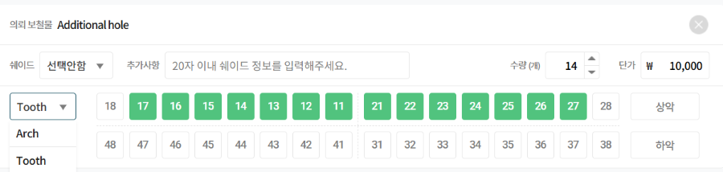
1. [Arch] : 상악 또는 하악 단위로 청구되는 보철물에 해당할 경우 선택합니다.
2. [Tooth] : 치아 단위로 청구되는 보철물의 경우 선택합니다.
1-1-8.차트번호(선택입력항목)
의뢰하는 환자의 차트 번호를 입력할 수 있습니다.
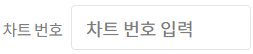
1-1-9.성별(선택입력항목)
의뢰하는 환자의 성별을 선택할 수 있습니다.
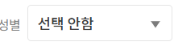
1-1-10.추가 사항(선택입력항목)
보철물 제작에 필요한 항목을 선택할 수 있습니다.(다중 선택 가능)
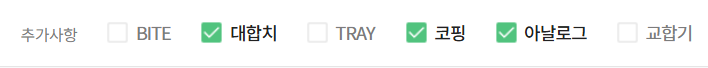
1-1-11.전달 사항(선택입력항목)
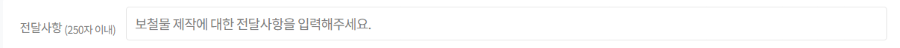
전달 사항 예시
1-1-12.첨부 파일(선택입력항목)
치아 쉐이드 사진, 구강 스캔 파일 등 보철물 제작에 필요한 파일을 첨부할 수 있습니다.
여러 파일을 업로드 할 수 있으며, 총 용량은 최대 500MB 까지 가능합니다.
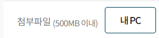
1-1-13.치식 그리기(선택입력항목)
보철물 제작에 필요한 내용을 그림으로 전달할 수 있습니다.
총 3가지 색상으로 그릴수 있습니다.
실행 취소, 다시 실행, 초기화 기능을 사용 할 수 있습니다.
치식 그리기 예시
2-1. 의뢰서 등록
필수 입력 항목을 모두 입력하면 우측 하단의 '의뢰서 등록'버튼이 활성화됩니다.
의뢰서 등록 후 의뢰 요청일과 완료 요청일은 그대로 유지되어 바로 다른 의뢰를 계속 등록할 수 있습니다.